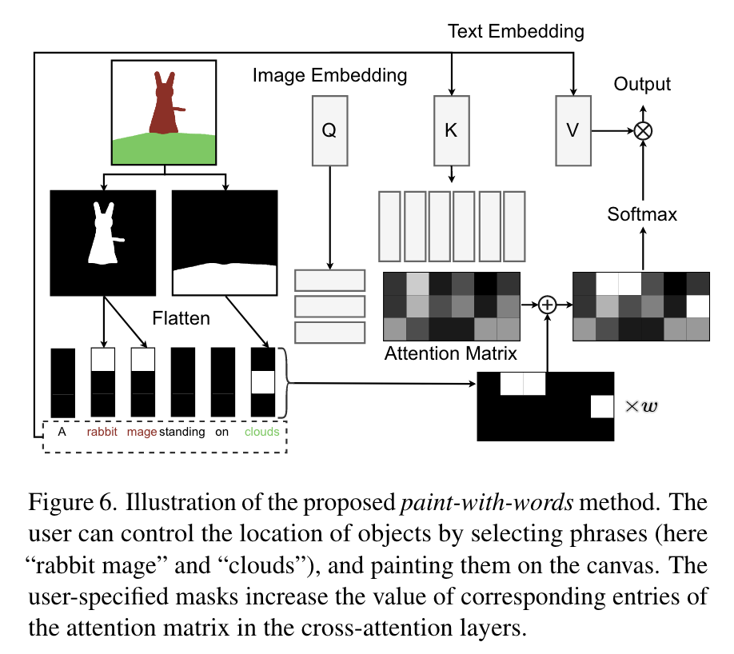

扩散模型应用·文生图大模型
\[ \newcommand{\x}{\mathbf x} \]
封面来自 CivitAI.
GLIDE
OpenAI 2021.12.20
GLIDE[1] 是 OpenAI 在 2021 年底推出的文本引导图像生成的扩散模型。GLIDE 沿用了 ADM[2] 架构，但是更大，有 2.3 billion 参数。为了向其中注入文本条件，作者首先将输入文本通过 BPE tokenizer 编码成了 \(K\) 个 tokens，然后经由一个有 1.2 billion 参数的 Transformer 得到 \(K\) 个 token embeddings，它们被融入了 UNet 的每一个 Attention Block 之中（如下图所示）；另外，取最后一个 token embedding 经过维度映射后与 time embedding 相加，融入 UNet 的每一个 ResBlock 之中，相当于替换了 ADM 中的 class embedding. 更多细节可参阅官方代码。
简而言之，除了使用 AdaGN，GLIDE 还在每个注意力层融入了文本条件。另外，上述 3.5 billion 参数（2.3+1.2=3.5）的模型只生成 64x64 图像，作者还构建了另一个类似的、有 1.5 billion 参数的模型把图像上采样至 256x256.
关于文本引导，作者尝试了两种方法——CLIP guidance 和 classifier-free guidance，实验发现后者效果更好。
CLIP guidance 其实就是将 classifier guidance 技巧中的分类器换做 CLIP 图像文本的匹配分数： \[ F_\phi(\x_t,y,t)=\text{E}_\text{I}(\x_t)\cdot\text{E}_\text{L}(y) \] 其中 \((\x_t,y)\) 是图像文本对，\(\text{E}_\text{I}\) 和 \(\text{E}_\text{L}\) 分别是 CLIP 的图像和文本编码器。同样的，CLIP 需要在 noised data 上训练，作者应该并没有像 SDG 那样设计自监督微调方式，而是直接训练的（毕竟 OpenAI 不差这点算力）。
Classifier-free guidance：作者首先训练了支持文本条件的模型，然后在此基础上以 20% 的概率丢弃文本条件微调，从而使模型也具有了无条件生成能力。
点击查看 GLIDE 的生成样例（摘自论文）

DALL·E 2 (unCLIP)
OpenAI 2022.04.13
虽然有了 GLIDE，但 OpenAI 还不满足，四个月后又推出了另一个文本引导图像生成模型 unCLIP[3]，也称作 DALL·E 2.
DALL·E 2 是一个 two-stage 模型：首先使用一个 prior 从 text embedding 生成对应的 image embedding；然后使用一个 decoder 根据 image embedding 生成图像，如下图虚线以下部分所示：
下面我们分别就 prior 和 decoder 做进一步的说明。
Decoder
Decoder 是一个以 CLIP image embedding 为条件的扩散模型，其融入条件的方式是在 GLIDE 的基础上修改而来：
- 将 image embedding 投影后与 time embedding 相加；
- 将 image embedding 投影为四个额外的 tokens，concatenate 到 GLIDE text encoder 的输出序列之后。作者保留了 GLIDE 的 text conditioning pathway，希望能为模型带来 CLIP 不具备的性质（如 variable binding），但实验发现这并没有发挥作用。
另外，作者也采取了 classifier-free guidance，在训练时以 10% 的概率将 image embedding 置零（或置为一个可学习的 embedding），并以 50% 的概率丢弃 text caption.
为了生成高分辨率图像，作者还用了两个上采样扩散模型，64x64 → 256x256 → 1024x1024. 同 SR3[4] 和 CDM[5] 一样，作者先将低分辨率图略微退化后再给到超分模型。具体而言，作者对第一个上采样阶段使用高斯模糊，对第二个上采样阶段使用更多样的 BSR 退化。值得注意的是，这两个超分模型只用了纯卷积而没用 attention layers，所以训练时可以只对 1/4 大小的 random crops 训练来减小计算量并保证数值稳定性，推断时改用完整大小。
由于 decoder 可以看作是从 image embedding 得到图像，和 CLIP 从图像得到 image embedding 正好是相反的过程，所以作者将整个文生图模型命名为 unCLIP.
Prior
用户输入文本（text caption）后，我们可以通过 pretrained CLIP 得到 text embedding，但是由于 decoder 的输入是 image embedding，所以我们需要训练一个 prior 模型从 text embedding 预测 image embedding.
作者尝试了两种方案：
- 自回归模型：将 image embedding 转换为一列离散编码，然后用自回归的方式逐个预测；
- 扩散模型：以 text embedding 为条件，用扩散模型对 image embedding 建模。
实验发现使用扩散模型效果更佳。关于如何融入条件的具体细节有亿些繁琐，感兴趣的读者直接看论文吧。
一个自然的问题是，prior 是否是必要的？我们为什么不直接把 CLIP text embedding、甚至是 text caption 给到 decoder 做生成呢？其实这样做也没毛病，不过作者做了一个 ablation study，发现用 prior 来预测 image embedding 效果更好。
论文列举了许多有趣的 image manipulations 应用，不过在介绍这些应用之前，我们先要明确一件事：每一张图像 \(\x\) 都对应着一个二元组 \((z_i,\x_T)\)，其中 \(z_i\) 是 CLIP 给出的 image embedding，也是 decoder 的条件；\(\x_T\) 是 decoder 给出的隐变量表示，可以通过 DDIM inversion 获得。换句话说，\((z_i,\x_T)\) 共同组成了一张图像的隐变量。
Variations
第一个应用称作 variations，指给定一张图像 \(\x\)，生成与之类似但不同的图像。我们首先根据 CLIP 和 DDIM inversion 得到 \(\x\) 对应的 \((z_i,\x_T)\)，然后取 DDIM 中的逆向方差非零采样，即可赋予采样结果多样性。结果请查看节末截图的 Figure 3.
Interpolations
给定两张图像 \(\x_1,\x_2\)，我们首先对 \({z_i}_1\) 和 \({z_i}_2\) 做球面插值：\({z_i}_\theta=\text{slerp}({z_i}_1,{z_i}_2,\theta)\). 接下来有两种选择：在 \({\x_T}_1\) 和 \({\x_T}_2\) 之间也做插值，或随机选定一个新的隐变量 \(\hat\x_T\). 前者能够保证插值的两个端点能够重构出给定的图像，而后者能够带来更多的随机性和可能性。作者在论文中展示了第二种选择的结果，见节末截图的 Figure 4.
Text Diffs
上面两个应用都是基于图像，但作为一个文本生成图像模型，怎么能缺少基于文本的图像编辑呢！受益于 CLIP 将文本和图像编码到了同一个隐空间之中，我们对 text embedding 的修改也能比较好地反映在 image embedding 上，从而让我们操纵图像。具体而言，给定两段文本，我们可以计算二者 text embedding 的差 \(z_d=\text{norm}({z_t}_1-{z_t}_2)\)，然后在 \(z_i\) 和 \(z_d\) 之间插值得到新的 image embedding：\(z_\theta=\text{slerp}(z_i,z_d,\theta)\). 把 \(z_\theta\) 给到 decoder 就能生成对应语义的图像了。结果请查看节末截图的 Figure 5.
最后，作者也发现 DALL·E 2 的一些问题，比如在物体-属性的对应关系上往往不如 GLIDE. 例如，输入文本为“一个红色方块在一个蓝色方块之上”，DALL·E 2 生成的结果不是把位置搞错，就是把颜色搞错，但 GLIDE 就靠谱很多。作者推测这与 CLIP embedding 本身没有显式地绑定物体与属性有关。
点击查看 DALL·E 2 的生成样例（摘自官网和论文）


Imagen
Google 2022.05.23
这里有一篇关于 Imagen 的很细致的博客。
看到 OpenAI 又是 GLIDE 又是 DALL·E 2 的，Google 这边终于坐不住了，推出了更强的文本生成图像大模型——Imagen[6]. 相比 DALL·E 2，Imagen 的整体思路更简单一些：先用一个大语言模型将输入文本编码为 text embedding，然后以此为条件并利用 classifier-free guidance 指导一个扩散模型生成 64x64 大小的图像，随后用两个上采样扩散模型（也加入了文本条件并使用了 classifier-free guidance）将图像上采样至 256x256 和 1024x1024，如下图所示：
下面我们分别对各个组成部分做进一步说明：
Pretrained text encoders
与 GLIDE 不同的是，Imagen 采用预训练好且固定不动的文本编码器而非从头训练。常见的 LLM，包括 BERT、CLIP、T5 都是可行的选择，作者发现 T5 效果最佳。有趣的是，作者发现扩大 text encoder 的规模比扩大 image diffusion model 的规模显著更有效。
Dynamic thresholding
我们知道，增加 classifier-free guidance weight 能够让模型更加符合条件——也就是生成的图像和文本更加贴合，但 weight 过大会导致图像失真，主要体现在过饱和的颜色上。这是因为 guidance 只用在 inference 阶段，与训练阶段存在 gap，导致预测的 \(\hat\x_0\) 往往不在理论的范围 \([-1,1]\) 内。我们知道即便是最早的 DDPM，实现时也会人为把 \(\hat\x_0\) clip 到 \([-1,1]\) 内，作者称这种做法为 static thresholding. 然而，static thresholding 不足以弥补 guidance 引入的 gap，因此作者提出了 dynamic thresholding：我们选择一个百分位，当发现位于该百分位的像素值 \(s\) 大于 \(1\) 后，就把所有像素都 clip 到 \([-s,s]\) 之间，然后整体除以 \(s\). 与 static thresholding 相比，dynamic thresholding 让百分位以内的所有像素都有所减小，因此能缓解颜色饱和问题。
Cascaded diffusion models
同 SR3、CDM、DALL·E 2 等一样，Imagen 作者也发现对超分模型而言，将低分辨率图像做一定的增强（高斯噪声）后作为超分模型的条件，能让模型更鲁棒。
Network architecture
对于第一个扩散模型，作者除了将 text embedding 与 time embedding 相加来融入条件，还采用了 cross attention.
对于两个上采样扩散模型，作者提出了更简单、收敛更快、更 memory efficient 的 Efficient U-Net. 相比常用的 U-Net，Efficient U-Net 做了如下改变：
- 在小分辨率添加更多的 residual blocks（如 8 个），将模型参数从大分辨率 blocks 转移到小分辨率 blocks.
- 在使用了很多 residual blocks 的小分辨率 blocks 中，将残差连接放缩到 \(1/\sqrt{2}\)，能显著加快收敛。
- 在传统 U-Net 下采样 block 中，下采样操作在卷积之后；而上采样 block 中，上采样操作在卷积之前。Efficient U-Net 调换了二者的顺序，显著加快了前向传播的速度，并且没有性能损失。
与 DALL·E 2 类似，第二个超分模型是在 image crops 上训练的，因此没有使用 self-attention layers，但是保留了 text cross-attention layers. 更多细节可以在论文的 Appendix F 中找到。
以上就是 Imagen 的基本内容，更多细节请参阅原论文。事实上，作者还在论文中还提出了 DrawBench 评测指标，这里按下不表。
点击查看 Imagen 的生成样例（摘自官网）


Stable Diffusion
StabilityAI Runway
Stable Diffusion 是 StabilityAI 和 Runway 在 Latent Diffusion[9] 的基础上加大规模发展而来。受益于其开源性质，是目前最出圈、最火热的文生图模型，以迭代了若干版本。相关内容可见 Stable Diffusion 模型概览一文。
eDiff-I
NVIDIA 2022.11.02
在 OpenAI 和 Google 打得有来有回之际，NVIDIA 终于也参与了进来，推出了 eDiff-I[7]. 通过分析文生图模型的去噪过程，作者发现：在去噪前期，模型非常依赖于文本条件来生成符合描述的图像；而在去噪后期，模型会几乎忽略文本，关注于生成高质量图像。因此，现有的方法在不同去噪阶段都使用同一个 UNet 模型也许并不好（尽管 time embedding 指示了去噪时间步）。于是，eDiff-I 对不同去噪阶段采用了多个专家去噪模型。为了训练效率的考虑，作者先只训练一个模型，然后逐渐将其分解为各个阶段的专家模型。值得注意的是，尽管模型多了，但推理时间还是不变的。另外，作者还研究了不同条件的作用，包括 T5 text embedding、CLIP text embedding 和 CLIP image embedding. 其中，CLIP image embedding 可以用来迁移参考图像的风格。最后，作者还展示了 “paint-with-words” 功能，即在画布上标注区域和文字，那么模型能在指定区域上依照对应文字作图。
如图所示，eDiff-I 由一个基础模型和两个超分模型构成，这一点与 Imagen 完全一致。每个分辨率下的模型都由多个专家模型组成。
为了训练专家模型，作者的主要思路是采用二叉树的方式：首先训练一个适用于全部噪声强度分布 \(p(\sigma)\) 的基础模型，然后将噪声强度平均分成两份 \(p_0^1(\sigma),p_1^1(\sigma)\)，均以基础模型初始化并分别在各自的噪声分布上微调；反复这个过程，最终 \(p(\sigma)\) 被分成了 \(2^l\) 个区间 \(\{p_i^l(\sigma)\}_{i=0}^{2^l-1}\)，每个区间上有一个专家模型 \(E_i\). 然而，这样要训练的模型成指数级增加，并不现实，所以作者只重点考虑 \(E_0^l\) 和 \(E_{2^l-1}^l\) 这两端的模型及它们的父节点，最后再用一个模型补齐中间的噪声区间。
由于文本并不好描述物体的位置，作者提出了 “paint-with-words” 技术，通过指定区域和对应文本来控制位置。这个方法并不需要训练，主要思路是修改 attention map，这其实与很多图像编辑工作（如 Prompt-to-Prompt[8]）的做法相同，具体如下图所示：

点击查看 eDiff-I 的生成样例（摘自官网）


RAPHAEL
DeepFloyd IF
DeepFloyd StabilityAI 2023.04.27
DeepFloyd IF 是 DeepFloyd Lab 和 StabilityAI 开源的文生图大模型，整体沿用 Imagen 的技术路线，可以看作是 Imagen 的开源版本。因此本身没有什么值得多说的。

可以看到确实与 Imagen 是差不多的，不过 DeepFloyd IF 在每个阶段都有不同大小的模型可以选择。

官方声称要发布论文，然而目前看来恐怕希望不大。在官网给出的定量指标中 IF-4.3B 表现非常优异，甚至超过了 Imagen.
点击查看 DeepFloyd IF 的生成样例（摘自官方 repo）

DALL·E 3
OpenAI 2023.09.21
DALL·E 3 建立在 DALL·E 2 的基础之上，结合了 GPT-4 超强的文本理解能力，将作为新的图像生成组件加入 ChatGPT. 受益于 GPT-4 强大的自然语言理解能力，DALL·E 3 生成的图像显著比其他模型更加符合用户的描述，并且能够借助 ChatGPT 实现交互式生成——只需要用聊天一样的自然语言，再也不用费劲做 prompt engineering 了！
遗憾的是，OpenAI 并没有详细描述技术细节，只在 System Card 中粗略地带了一句实现原理：用 GPT-4 将用户的自然语言描述转化为 DALL·E 3 的 prompt 输入。当用户的输入相对模糊时，GPT-4 会自动补全细节。
OpenAI 团队非常注重不当信息的处理，包括涩涩、偏见（种族、性别、文化）、带有误导性的拟真图片、公众人物、生化武器、版权商标、艺术家风格等。OpenAI 在 System Card 中着重阐述了对这些不当信息的发现与处理。
总的来说，DALL·E 3 大幅提高了文生图模型遵循文本描述的能力，是一个非常大的突破。不过，从官方或民间展示的图像来看，其生成质量本身并没有达到业界最顶尖（Midjourney）的水准。
点击查看 DALL·E 3 的生成样例（摘自官网）


References
- Nichol, Alex, Prafulla Dhariwal, Aditya Ramesh, Pranav Shyam, Pamela Mishkin, Bob McGrew, Ilya Sutskever, and Mark Chen. Glide: Towards photorealistic image generation and editing with text-guided diffusion models. arXiv preprint arXiv:2112.10741 (2021). ↩︎
- Dhariwal, Prafulla, and Alexander Nichol. Diffusion models beat gans on image synthesis. Advances in Neural Information Processing Systems 34 (2021): 8780-8794. ↩︎
- Ramesh, Aditya, Prafulla Dhariwal, Alex Nichol, Casey Chu, and Mark Chen. Hierarchical text-conditional image generation with clip latents. arXiv preprint arXiv:2204.06125 (2022). ↩︎
- Saharia, Chitwan, Jonathan Ho, William Chan, Tim Salimans, David J. Fleet, and Mohammad Norouzi. Image super-resolution via iterative refinement. IEEE Transactions on Pattern Analysis and Machine Intelligence (2022). ↩︎
- Ho, Jonathan, Chitwan Saharia, William Chan, David J. Fleet, Mohammad Norouzi, and Tim Salimans. Cascaded Diffusion Models for High Fidelity Image Generation. J. Mach. Learn. Res. 23 (2022): 47-1. ↩︎
- Saharia, Chitwan, William Chan, Saurabh Saxena, Lala Li, Jay Whang, Emily Denton, Seyed Kamyar Seyed Ghasemipour et al. Photorealistic Text-to-Image Diffusion Models with Deep Language Understanding. arXiv preprint arXiv:2205.11487 (2022). ↩︎
- Balaji, Yogesh, Seungjun Nah, Xun Huang, Arash Vahdat, Jiaming Song, Karsten Kreis, Miika Aittala et al. ediffi: Text-to-image diffusion models with an ensemble of expert denoisers. arXiv preprint arXiv:2211.01324 (2022). ↩︎
- Hertz, Amir, Ron Mokady, Jay Tenenbaum, Kfir Aberman, Yael Pritch, and Daniel Cohen-Or. Prompt-to-prompt image editing with cross attention control. arXiv preprint arXiv:2208.01626 (2022). ↩︎
- Rombach, Robin, Andreas Blattmann, Dominik Lorenz, Patrick Esser, and Björn Ommer. High-resolution image synthesis with latent diffusion models. In Proceedings of the IEEE/CVF conference on computer vision and pattern recognition, pp. 10684-10695. 2022. ↩︎